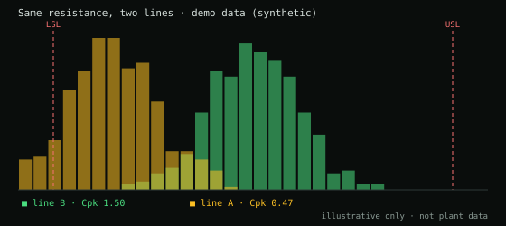
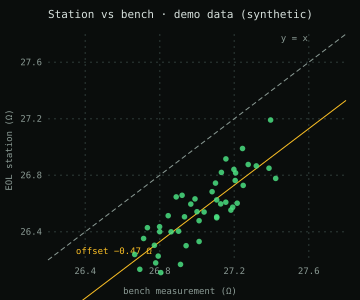

A −0.47 Ω bias hiding behind a Cpk of 0.47.
Problem → method → finding → impact: how test-log analytics showed that an EOL station was biased, and why a calibration certificate was not enough.
problem
An end-of-line (EOL) test station was rejecting good parts. On top of that, one line showed a Cpk of 0.47 on the same resistance that another line measured at a Cpk of 1.5. Same part, same requirement, very different capability: either the process or the measurement was different.
method
- Python parsers for two different log formats, writing to one common output schema.
- Detection of overload sentinel values (9.9E37) so they cannot be mistaken for real measurements.
- A Power BI dashboard: Cp/Cpk, scatter with limits, histogram with normal curve.
- Analysis line by line, then bench measurements paired by serial number.

finding 1 · a station bias
One station read about −0.47 Ω low. The bench comparison on the same parts confirmed it, and a second, independent sample taken weeks later agreed.
| Evidence | Result |
|---|---|
| Paired bench measurements (by serial number) | n = 46 · r = 0.83 |
| Regression slope vs 1 | indistinguishable (p = 0.96) |
| Interpretation | An additive offset, not a gain error |
| Ruled out | Bad contact, assembly stress, single-channel faults |
| Replication | Second independent sample, weeks later |

finding 2 · calibration vs validation
The calibration certificate of the LCR meter covered standard points, but never the real operating range of the parts (~27 Ω and ~90–100 nF). The instrument was calibrated, and still had not been validated where it was used.
what it demonstrates
- Applied statistics: Cpk, regression and hypothesis tests used to separate a gain error from an offset.
- Data-pipeline design: two formats, one schema, with bad values caught early.
- Communication: a root cause handed to Metrology with evidence.
what I learned
- Calibrating is not the same as validating at the point of use.
- When two lines disagree on a Cpk, check the measurement system before touching the process.
- A second independent sample is cheap and turns a suspicion into a finding.
stack
Confidentiality: no part numbers, customers, people, internal line names, real logs or real screenshots appear on this site. Charts are labeled demo data.